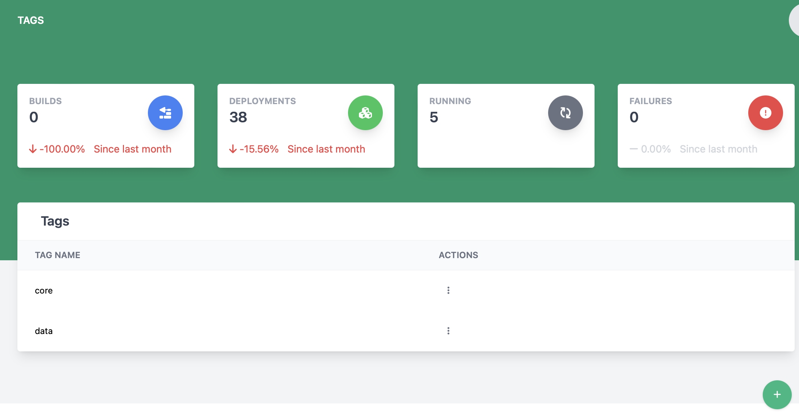
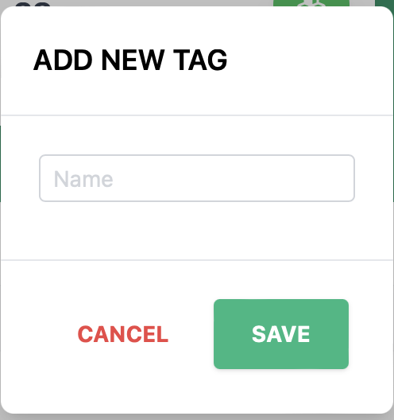

Viewing and Managing Tags
The tags page lets a system admin user manage a list of tags for the system that will be used to link hosts and components.

Creating a tag
- Click the
 button at the bottom of the screen
button at the bottom of the screen -
The create new tag dialog will appear

-
Enter the new tag name (This is required)
- Click Save to create the tag
Deleting a tag
To delete a tag, find the row with the tag to be deleted and click the 3 vertical dots to open the action menu and select Remove.
Editing a tag
To edit a tag, find the row with the tag to be edited and click the 3 vertical dots to open the action menu and select Edit.